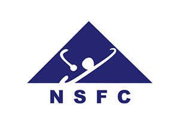

Selected Publications (click to sort: first author / date)
Full paper list can be viewed in Google Scholar.
DFormer: Rethinking RGBD Representation Learning for Semantic Segmentation
Bo-Wen Yin, Xuying Zhang, Zhong-Yu Li, Li Liu, Ming-Ming Cheng, Qibin Hou#.
ICLR, 2024
paper / code / bibtex
Bo-Wen Yin, Xuying Zhang, Zhong-Yu Li, Li Liu, Ming-Ming Cheng, Qibin Hou#.
ICLR, 2024
paper / code / bibtex
DFormerv2: Geometry Self-Attention for RGBD Semantic Segmentation
Bo-Wen Yin, Jiao-Long Cao, Ming-Ming Cheng, Qibin Hou#.
CVPR, 2025
paper / code / bibtex
Bo-Wen Yin, Jiao-Long Cao, Ming-Ming Cheng, Qibin Hou#.
CVPR, 2025
paper / code / bibtex
OmniSegmentor: A Flexible Multi-Modal Learning Framework for Semantic Segmentation
Bo-Wen Yin, Jiao-Long Cao, Xuying Zhang, Yuming Chen, Ming-Ming Cheng, Qibin Hou#.
NeurIPS, 2025
paper / code / bibtex
Bo-Wen Yin, Jiao-Long Cao, Xuying Zhang, Yuming Chen, Ming-Ming Cheng, Qibin Hou#.
NeurIPS, 2025
paper / code / bibtex
HumanOmniV2: From Understanding to Omni-Modal Reasoning with Context
Tongyi HumanMLLM Team.
Technical Report, 2025
paper / code / bibtex
Tongyi HumanMLLM Team.
Technical Report, 2025
paper / code / bibtex
Experience
 2025/5 - Now Alibaba, Tongyi Lab |
Human Video Understanding Team (HumanMLLM), Multimodal Large Model Algorithm InternDevelope process reward model for thinking-with-images. Our team propose HumanOmni series, enabling better interaction with people. |
Services & Awards
|
 2026/1 - Now NSFC - Young Students Fund (PhD Student)-300K RMB |
Research on Lightweight RGBD Semantic Segmentation Method Based on Spatial Structure MatrixDelving deeply into the inherent physical meaning of depth aids the model in scene understanding. |
|
2025/12 - Now CAST - Support for young talents by the China Association for Science and TechnologySpecial |
Plan for PhD Students of the Youth Science and Technology Talent Cultivation ProjectSupported by the China Society of Image and Graphics (CSIG). |
Education
2021/09 - 2027/06, I am a Ph.D student at College of Computer Science, Nankai University, under the supervision of Qibin Hou and Ming-Ming Cheng.
2017/09 - 2021/06, I was an undergraduate student at School of Electronic Engineering, Xidian University.
2017/09 - 2021/06, I was an undergraduate student at School of Electronic Engineering, Xidian University.